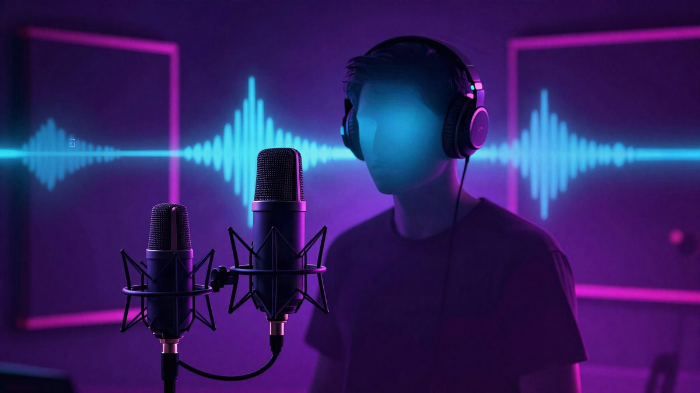

47 mjeseci zatvora za Floridanca koji je AI-jem kloniranim glasom glumio streamera N3ona

David Anthony Sanchez, poznat kao "Dave the Jewler", osuđen je na Floridi na 47 mjeseci zatvora jer je klonom glasa streamera N3ona prevario organizatore memecoin projekta. Od njih je dobio kriptovalute vrijedne oko 260.000 dolara (oko 240.000 eura).
Sud na Floridi osudio je Davida Anthonyja Sancheza, poznatog kao "Dave the Jewler", na 47 mjeseci zatvora zbog kripto prijevare u kojoj je AI-jem imitirao popularnog streamera N3ona. Sanchez se izjasnio krivim za pranje novca i tešku krađu identiteta, a sud mu je naložio i naknadu štete žrtvama.
Ured američkog državnog odvjetnika za južni okrug Floride u priopćenju navodi da je Sanchez AI-jem klonirao glas Mikylea "N3ona" Rafiqa. Organizatore jednog memecoin projekta uvjerio je da je streamer pristao podržati i promovirati njihov projekt te sudjelovati u njemu. U komunikaciji s organizatorima glumio je i N3ona i njegova predstavnika.
Organizatori su na račune koje je Sanchez kontrolirao prebacili kriptovalute vrijedne oko 260.000 dolara (oko 240.000 eura). Dio je zatim pretvorio u američke dolare i potrošio u osobne svrhe.
Izjava tužiteljstva
Yara Lorenzo Klukas, vršiteljica dužnosti državne odvjetnice za južni okrug Floride, rekla je da iza svake prijevare stoje stvarni ljudi koji trpe stvarnu financijsku štetu. Optuženik je, kaže, iskoristio umjetnu inteligenciju da manipulira povjerenjem žrtava i oduzme im novac. Presudu je opisala kao znak predanosti zaštiti žrtava, očuvanju integriteta financijskih tržišta i kažnjavanju onih koji nove tehnologije koriste za prijevare.
N3on i AI klonovi
N3on nije prvi put povezan s AI kopijama samog sebe. Aftermath navodi da je deepfakeom pokušao održati svoj stream na platformi Kick u pogonu 24 sata dnevno. Njegov lik pojavio se i u AI-generiranom filmu koji je izašao prije nekoliko mjeseci.
Nije poznato je li sam N3on bio meta prijevare ili je zbog nje pretrpio štetu. Tužiteljstvo žrtvama smatra organizatore memecoin projekta, koji su povjerovali da razgovaraju sa streamerom i njegovim predstavnikom.
Izvor: Engadget